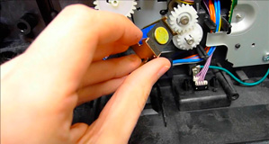
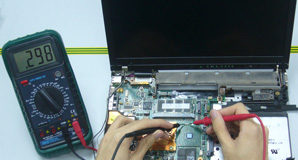
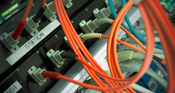

| HOME | MISION | VISION | GALERIA | CAPACITACION | NUESTRAS SEDES | ACCESORIOS |
GALERIA
Mantenimiento y Reparación de Impresoras y Perifericos
El mantenimiento de una Impresora se hace tanto interna como externamente, quitando internamente todas las partículas de polvo las cuales cusan el mal funcionamiento, así mismo como una impresora tiene sistema de movimiento los aceitamos para un mejor desplazamiento
Mantenimiento y Reparación de Computadores
El mantenimiento de Computadoras consiste en una limpieza de hardware y Software. La limpieza Interna de Hardware consiste en remover todas las particulas de polvo que se encuentran en todos los dispositivos tales como tarjetas controladoras, que se encuentran internamente, y tambien la limpieza externa.
Cableado Estructurado y Redes
Instalación de redes Cliente Servidor, grupos de trabajo, para oficinas, Tiendas, Centros de Internet, Etc.. Le diseñamos su red ya sea atravez de cabledo estructurado o bien, con la Nueva tecnologia Inalambrica . Utilizamos los últimos sistemas en cableado de alta transmisión. Cajas y Switchs, adaptables a cada situación.
